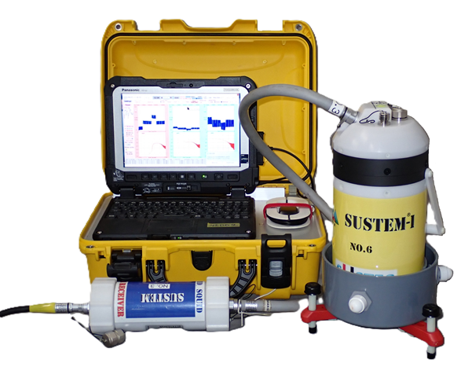

SQUID-TEM: SUSTEM
SQUID-based Transient Electromagnetic Geophysical Exploration

Made-in-Japan SQUID-TEM system
- 3-axis B-field measurements by high performance HTS-SQUID magnetometers
- User-friendly operation (automatic sensor calibration)
- Liquid N2 for cooling instead of liquid He.
- Portable design for field usage with tough environment.
User friendly field operation & higher durability against environmental noise
- Light weight, handling by one person.
- Surface-to-Surface measurement configuration (no downhole deployment required)
- Continuous operation without interference.
- No need to dig the hole for system mounting at the surface
- Only few hours per 3-axis B-field measurements at single point.
Sophisticated data processing and interpretation
- Proprietary workflow of data processing for ultimately high sensitive SQUID-TEM data.
- Map out the high-resolution 3D geoelectrical subsurface imaging by proprietary 3D inversion analysis.
- Cost-effective site characterization and reservoir monitoring using timelaps SQUID-TEM survey
Performance comparison with conventional TEM system
| Conventional TEM | SQUID-TEM | |
|---|---|---|
| Primary Field | Artificial pulse field | Artificial pulse field (line source) |
| Induced Signal | Derivative of Magnetic field (dB(t)/dt) | Direct Magnetic field (B(t)) |
| Sensor | Induction Coil | SQUID Magnetometer |
| Signal Frequency | 1Hz ~ 10kHz | 0.05Hz ~ 10kHz |
| Influenced by Primary Field | Free | Free |
| Signal Intensity | ∝ S3 | ∝ S3 |
| Exploration Depth | Up to few 100m | 0 ~ 5000 meter |
S : Stratum conductance S = h/ρ (h:Tickness, ρ:Resistivity)

The advantages of using SQUID-TEM
- SQUID-TEM supplements and extends conventional seismic evaluation techniques.
- SQUID-TEM’s enhanced Signal/Noise data provides higher quality and higher resolution resistivity models.
- SQUID-TEM provides superior spatial resolution than conventional EM methods for assessing shallow and deep reservoirs and aquifers.
- SQUID-TEM can differentiate fluid types making it ideal for monitoring IOR/EOR flood efficiency.
- SQUID-TEM’s low-cost acquisition make it an ideal CO2 plume monitoring tool and geothermal reservoir exploration/evaluation.